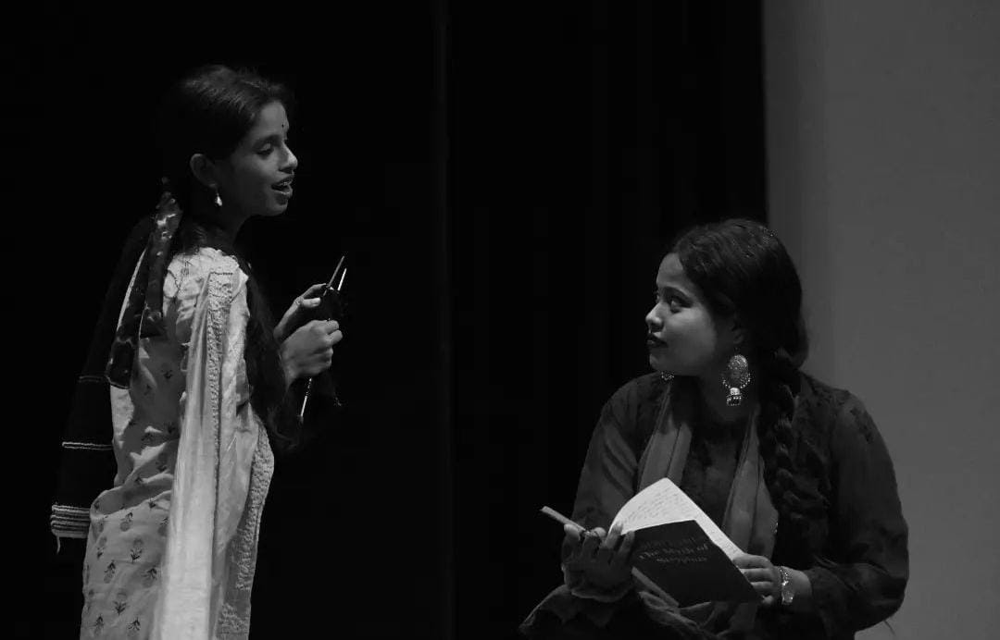
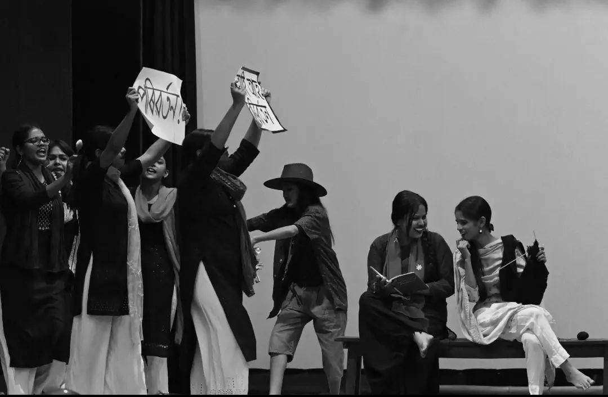

.jpeg)
Contact Me
Hi, My name is
Debjani
Kashyap
and I am a
About Me
As a dynamic and versatile media and PR specialist with extensive experience in content creation, audio and video production, advertising, social media management, and digital marketing, I excel in crafting compelling narratives that engage audiences and drive brand awareness. My keen eye for detail and passion for storytelling enable me to create impactful content across various platforms, ensuring each piece resonates with the target audience. I have successfully managed social media accounts, developed strategic advertising campaigns, and utilized digital marketing tools to enhance brand visibility and engagement. With a strong background in both traditional and digital media, I take a holistic approach to communication strategies, integrating various platforms to create a cohesive brand experience that strengthens visibility and reputation. My diverse skill set, technical expertise, and strategic mindset make me a valuable asset, capable of delivering effective communication strategies that drive brand success.
Work Experiences

Summer Intern at INDIA TODAY(2023)
Joined as a summer intern during July - August 2023. Worked as a content writer,
videographer and a reporter. Work also
included monitoring news agencies, updating news, trends, etc; suggesting pictures and
captions for social media,
videography and collecting news in and around Guwahati, researching and developing content
for the website, reporting
and collecting bytes, etc.

Voice Over artist at ETV BHARAT(2019-2022)
Worked as a voice over artist, content analyzer and translator. Work included analyzing and
reading scripts, voice over
for animated shows, voice modulation and translation, suggestions on screenwriting for
animated shows and dubbing for
advertisements, shows and cartoon series.

Public Relation Executive at Pita Potata(2021-2022)
I successfully raised the company profile through targeted public relations and media
campaigns, enhancing brand
recognition and reputation. By establishing a positive public image through strategic media
relations and public
speaking engagements, I organized and managed public relations events that significantly
increased brand awareness and
improved customer loyalty.

Content Creator at The North Eastern Chronicle(2018-2019)
Joined the team in 2018 in its budding stage. Worked as a campus ambassador and content
creator. Work included looking
after the company's overall performance, identifying trends and analyzing contents. Wrote
and gathered contents for the
social media page. Engaged in developmental activities, events and crowd management.

India Transformation for Education - Teach For India (2020-2021)
Worked as a teacher, content creator and handled social media. Reached out to the under
priviledged and marginalized
students of Arunachal Pradesh during Covid 19. Taught NCERT syllabus to the board appearing
candidates. Engaged in
various developmental projects under the government of Arunachal Pradesh and created and
analyzed contents for the team.
Projects
SHORT FILM - COFFEE
Worked in the scripting and as an assistant director in the short film-
Coffee.
NEWS BULLETIN
Worked as a news anchor and news correspondent for an academic assignment.
PSA- Public Service Announcement - "Stay Hydrated"
Worked in the scripting and acted in the Public Service Announcement -
"Stay Hydrated"
MUSIC FILM - TUMI HAHILE
Worked as a director, production designer and wrote the screenplay for the
music video.
Released in 2022. Moreover, looked after the management and the creative team.
SHORT FILM - ABODDHO
"Aboddho" is a reflection of the monotheistic life that lockdown has
brought. The film
carefully delineates the effects of the worst vice "boredom" and explores the psyche of
individuals. Acted as
the lead character in the film.
SHORT FILM - DADAH
The film depicts the ill effects of drugs and drug abuse. It aims at
exploring the nuances
of such addiction and its effects on mankind. Acted in the film and assisted in production
management.
SHORT FILM - AHALYA
The film tries to bring into light revolves around an enigmatic creature
encountering
themes of discovery, love, sadness, and self-discovery, ultimately reaching a profound
understanding of the
value of acceptance. The creature's path is frequently illuminated by the support of nature and
other
characters, symbolizing the idea that the universe offers opportunities for enlightenment to
those who seek it.
Was involved in productions and acting.
WAITING FOR PORIBORTON - DRAMA
Debut direction of a full length drama. Based on Samuel Beckett's "Waiting for Godot". Conceptualized and wrote the script. Also acted in the play. Won the "Best Director" award for the play.

